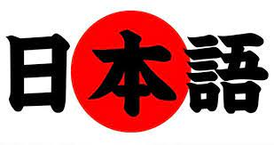
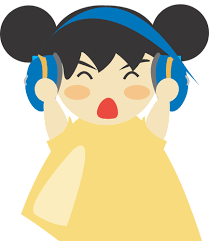
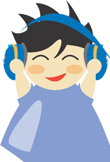

最初にどうすればいいの ?
実は、最初に外国人なら日本語が難しそうだけど、どんどん勉強すればすごく簡単になる一方です。じゃ、まずひらがなとカタカナを勉強するものはとても大切なもんだし、それをしたままで、君がもう小さい文章を読め始めるでしょう。ひらがなとカタカナを覚えるのは二週間以上はいい時間だと思いますが、するとこれから頑張りましょう！
ひらがなとカタカナの後は ?
ひらがなとカタカナを覚えた後で動詞と文系を勉強した方がいいだから、これでそれぞれの日本語の日常会話ができるし、ちょっと話すこともできるでしょう。他の大切な目は漢字ですよ、まず簡単な漢字を覚え始めて、それの後にどんどん最も複雑な漢字を覚えてください。
聴解練習を忘れないでよ！
最初に聴解練習をするのはちょっと難しいのに、問題なし、何回でも聞いて時間が経ちつつ、絶対にうまく聞ける。最初に一日に１５はいいですが、日本語力を上げたら、３０分、４０分ほどきてみましょう。始めるように、音楽を使わないで、とても難しい日本語を使っていてから全然わからないかもしれません、音楽の代わりに日本語能力試験の聴解問題を聞いた方がいいです。
 最後に
僕の最後おすすめは youtubeでオンライン授業を見ることであり、それをするのために次にyoutubeチャネルのリストをしています。それは僕の一番好きなチャネルですよ、じゃあチェックしてみてね。